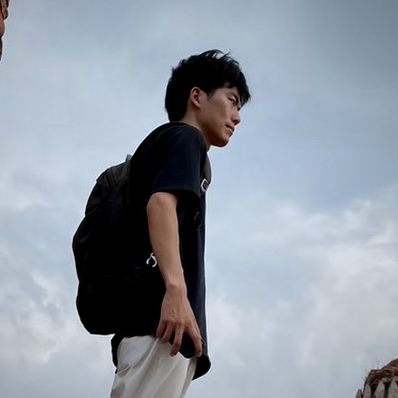
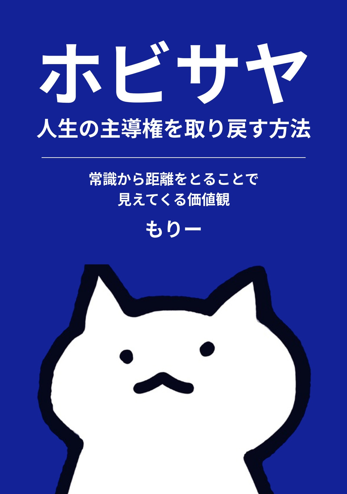

プロフィール

もりーです。ポッドキャスト『ホビサヤ』のパーソナリティで、旅するポッドキャスター／著者として活動しています。
ポッドキャスト「ホビサヤ」（stand.fm／YouTube）を配信し、YouTubeでは3チャンネルを運営。東南アジアを中心に世界12ヶ国を旅し、韓国語・タイ語・インドネシア語など東南アジアの言語を独学で学んできました。AIを相棒にひとり事業を回し、自作アラームアプリ「世界の音で目覚める」も開発しています。
発信の軸は「人生の主導権を取り戻す」。他人の物差しから降りて、自分の選択で生きるための考え方を、旅と日常の実践から語ります。
『ホビサヤ』とは、世界に目を向ける活動です。ただし観光とは異なります。世界の多様な価値観を、評価も感動の押し売りもせず、その土地の朝の音、市場の匂い、人の暮らしとともに、できるだけリアルに、飾らずに届ける。見る人自身の「あたりまえ」に揺らぎを持ち込む、その呼び水を作る試みです。
話せるテーマ
トークショー、ポッドキャストのゲスト出演、講演、共著・寄稿のご相談用に、話せるテーマをまとめました。各テーマには、ポッドキャスト「ホビサヤ」での実際の配信実績（500回を超える配信からの棚卸し）を添えています。
考え方・マインドセット（思考法）
- 白黒つけるな、グレーで考えろ — 煽らない、断定しない。ご意見番としての思考法
- 「頭がいい」は幻想である — 頭の良さを分解すると、残るのは習慣と思考の型
- 今は決めない、という選択 — 即断即決が正解とは限らない場面の見極め
生き方とキャリアの「主導権」
- 人生の主導権を取り戻す方法 — 他人の物差しから降りて、自分の選択で生きるための考え方（著書の核）
- 「好き」か「稼げる」かは、気にしなくていい — 仕事の4象限は流動的。あえて「嫌な2割」を残すと全体がうまく回る理由
- フリーか就職か、迷った時点で就職すべき — 独立経験者だから話せる、フリーランスの現実と向き不向き
- 選択肢が減ると幸福になる — ミニマルな暮らしと意思決定の話
人間関係・コミュニケーション論
- 人間関係で悩むか、リセットするか — 関係の棚卸しと距離の取り方
- 「茶室型」と「道場型」 — 場の空気で変わるコミュニケーションの型（独自概念）
- 「あいつは読解力が無い」で片付けるな — 伝わらない原因を相手のせいにしない話し方・聞き方
哲学・スピリチュアル × ロジック
- スピリチュアルとロジックは、同じことを言っている — 一見対極の2つが指す先の共通点
- 直感と分析の使い分け — どちらかではなく、場面で切り替える実践論
AIとひとり事業
- AI時代の鍵は「全部任せる覚悟」 — AIに仕事を任せ切ることで生まれる時間と、任せる側に残る仕事
- ひとり事業 × AI運用の実践 — YouTube 3チャンネルの運営、書籍制作、アプリ開発までをAIと回す現場の話
- 「コンピュータの中に工場を持つ」個人の働き方 — 試すコストが激減した時代に、個人がどこまで作れるか
旅と世界
- 東南アジア7ヶ国ひとり旅の経験談 — 格安で、安全に、現地の人と仲良くなる旅の技術
- 現地の人の家に泊まる旅 — 観光地ではない「暮らし」を見に行くスタイル
- 旅しながら働く・稼ぐ — 旅するポッドキャスターの収録と収益の仕組み
語学学習（YellowPen式）
- 独学で語学を続ける方法 — 言語の「読み方」から入ると挫折しない
- ハングルはアルファベットに置き換えて読む／タイ文字は仕組みで読む — YellowPen式メソッドの解説（著書あり）
- 語学は「稼ぐ道具」より「世界を広げる趣味」 — 語学好きが語る、続けるコツ
発信と収益化
- 登録者10万人を目指すYouTube運営 — Shorts中心の伸ばし方、3チャンネルの回し方（YellowPen韓国語 登録者8万人超）
- Kindle出版という、もう一つの収入源 — 個人が本を出して売るまでの全工程
- 不労所得 月18万円への道 — ポッドキャスト・YouTube・書籍を組み合わせる設計図
健康寿命とウェルビーイング
- 「動けるおじさん」でいるための習慣 — ヨガ・瞑想・自重トレーニングを無理なく続ける方法
- 世界の朝の音で目覚める — 自作アラームアプリと、旅先で集めた音の話
実績
-
2023
第60回「宣伝会議賞」グランプリ受賞
初応募でのグランプリ受賞。三浦工業の課題作「『なんでお湯出ないんだよ』『なんでお湯出ると思うんだよ』」。月刊『宣伝会議』2023年6月号にグランプリインタビュー掲載。アドタイのインタビュー記事
-
2023
米「Fast Company」に作品掲載
電気を使わず太陽光で光る照明「NISSHOKU（日食）」が、米デザイン誌 Fast Company の記事で紹介された。2018年に美大卒業直後に設計し、BASEショップで販売。designboom を起点に、ブラジル、ロシア、インド、中国、カナダ、英国など世界各国のメディアにも掲載され、イタリアの学会誌では学術論文のケーススタディとして引用された（掲載15件を確認）。Fast Company の記事
-
2023
ホームケア土屋の『わたしの』コラムにゲスト出演
訪問介護事業所「ホームケア土屋」のブログコラムで、AIと福祉をテーマに対談。フリーのデザイナー／コピーライターとして、仕事でのAI活用について語りました。対談記事
-
2019
ADF Milano Salone Design Award 優秀賞（Outstanding Performance）受賞
青山デザインフォーラム主催、テーマ「Portable Space」。折りたたみランプとスカーフチェア（ソフトビニール製、折り紙発想）が受賞し、The Japan Times（2019年4月28日）で紹介された。The Japan Times の記事
-
2022
第33回 MBCラジオ CMグランプリ 金賞受賞
ラジオCMのグランプリで金賞を受賞。武蔵野美術大学の公式ニュースでも報じられた。武蔵野美術大学のニュース
-
2021–2022
株式会社Kiaraとの対談シリーズ「Kiara x Design」に出演
株式会社キアラ代表との対談シリーズにデザイナーとして出演。仕事スタイル、Data Drivenデザイン、メルカリのデザイン研究、ブロックチェーン、ベーシックインカム、Web3などをテーマに語りました。対談シリーズのページ
-
2017
武蔵野美術大学 基礎デザイン学科 卒業制作優秀作品に選出
作品「スカーフチェア SCARF CHAIR」（ビニール、平面が立体になる椅子）。担当教員は柴田文江教授。大学の選出作品ページ
著書

『ホビサヤ 人生の主導権を取り戻す方法』
ポッドキャスト「ホビサヤ」の語りを再構成した自己啓発書。グレーで考える思考法、仕事の4象限と「2割残しの法則」、主導権の取り戻し方を10章で語ります。
Amazonで見る →2割残しの法則
仕事の中の「やりたくない2割」は、消す対象ではなく、あえて残すものとして自分で選ぶ。嫌な仕事を消しても、新たに2割が「嫌」になる。だからこそ、残す2割を自分で選ぶことに主導権があります。
出演・登壇のご依頼
トークショー、ポッドキャストやラジオへのゲスト出演、講演、共著・寄稿のご相談は、こちらのフォームからお寄せください。（呼ばれる側の出演のみ承っています。主催・集客は行っていません）
出演・登壇のご依頼フォームコンサルティング・アドバイザリー
観察者の目で御社の会議に参加し、外からは見えにくい「あたりまえ」の偏りに気づく視点をお渡しします。
- 月1回、会議に参加します（オンライン・対面、両方可）
- 御社のHPやSNSに「アドバイザー：もりー」と表記いただけます。会議の様子の写真撮影・発信も可能です
- いただいたお話の守秘は徹底します。そのうえで、差し支えない範囲でポッドキャストで話題に出すことがあるかもしれません
数社限定でお受けしています。
月額50,000円（税込）
内容によっては、お受けできない場合があります。